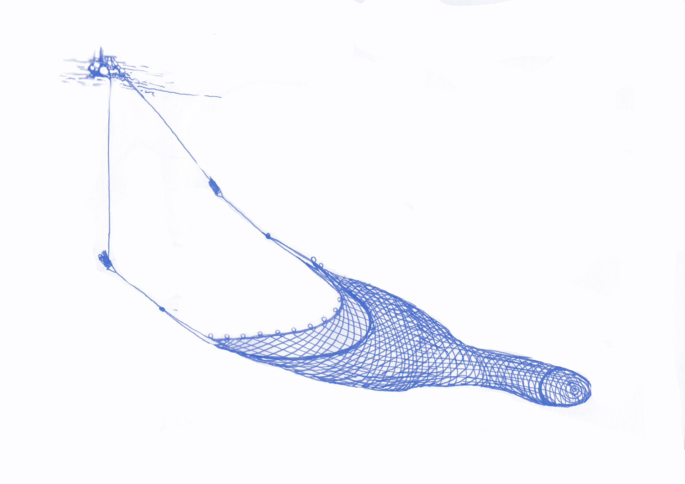
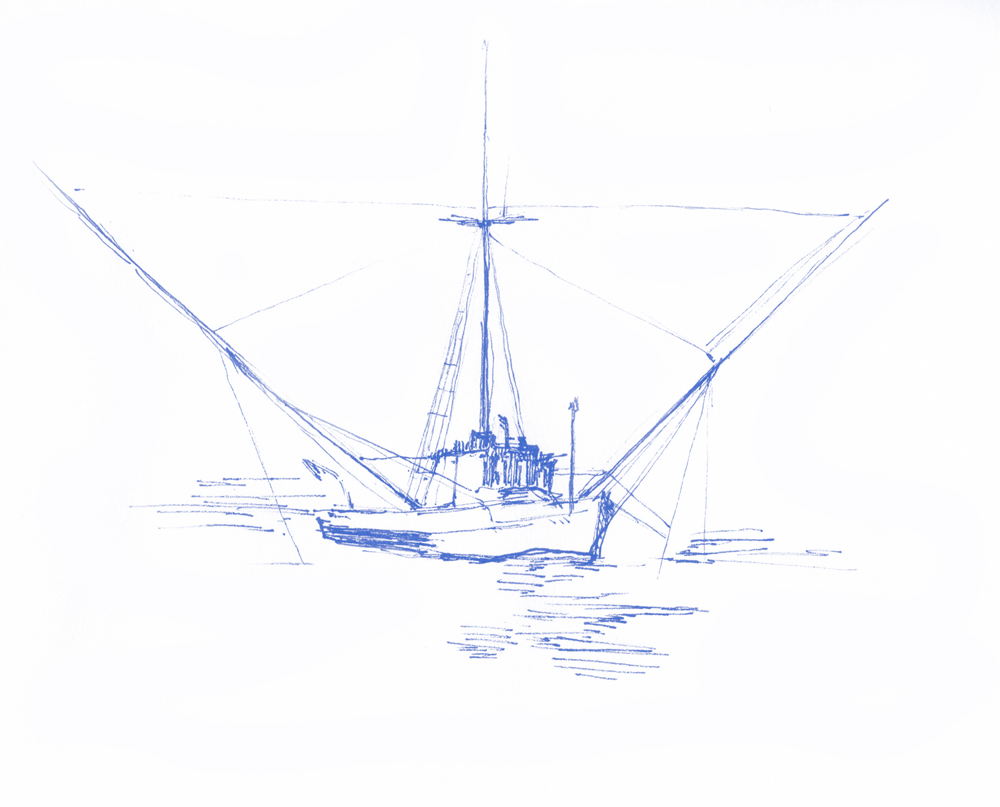
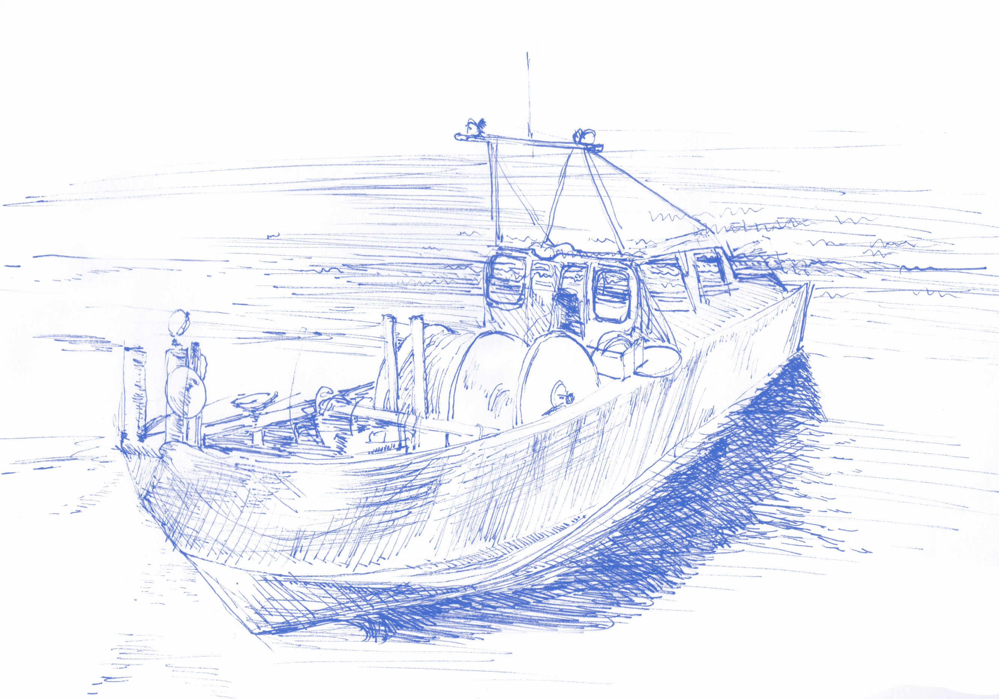
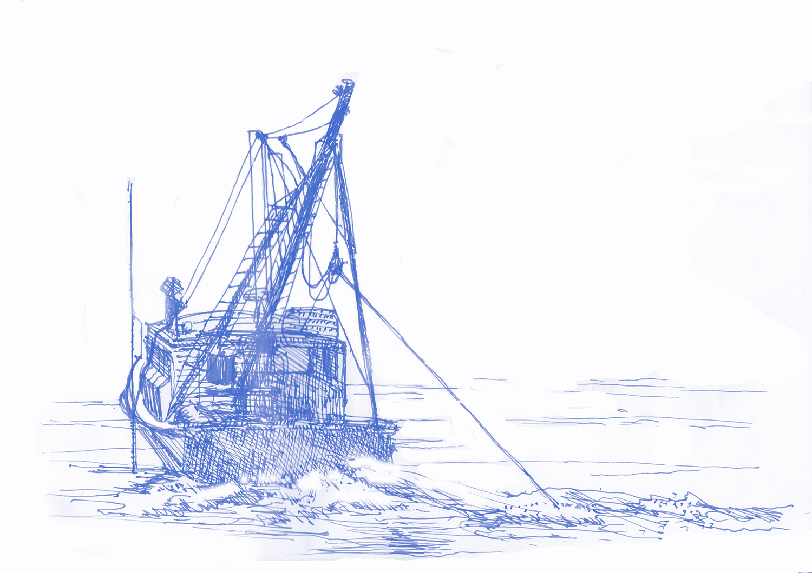
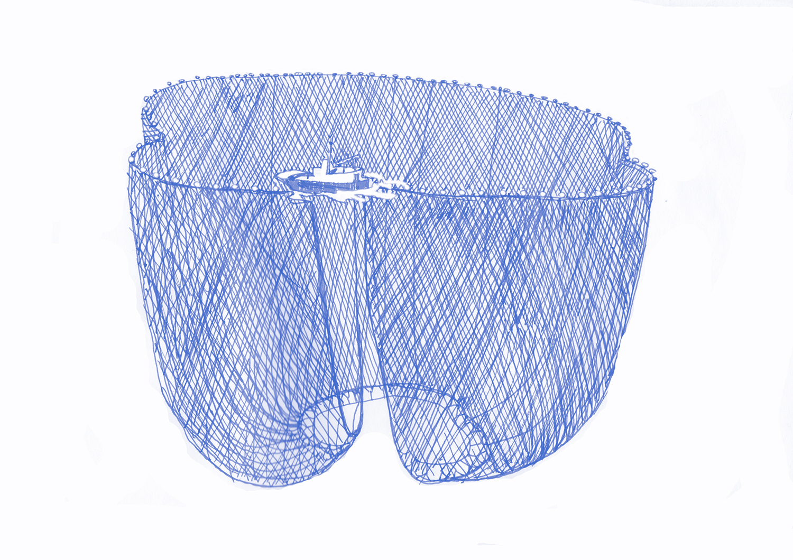
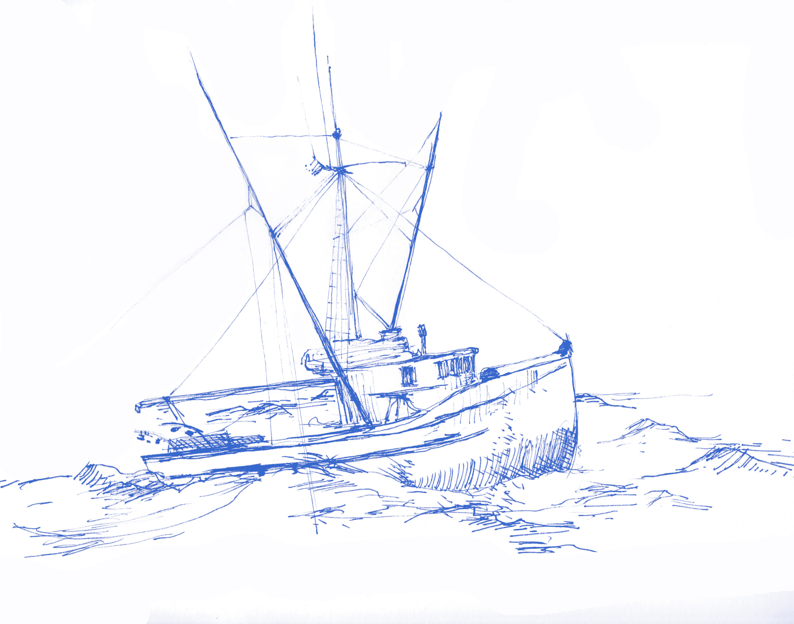
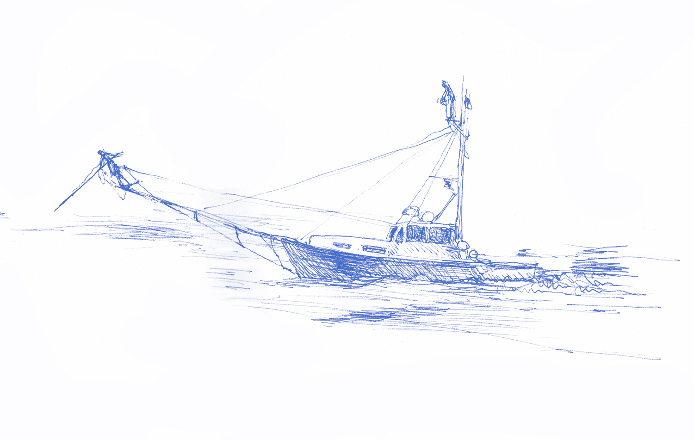

From Ocean to Table:
Sustainable Fisheries
Mermaid's Garden distributes fish caught in sustainably from Florida to Maine. We present the location of these vessels with geospatial data of each catch in a given year, alongside their landed values. The goal of this project is make a useful decision-making tool for those interested in sustainable fisheries.
Acadian Redfish
Sebates fasciatus
value of landed catch $ here
This week’s share fish is Acadian Redfish! Never heard of it? There’s a reason for that. Sebates fasciatus was once a highly valued commercial fishery in the United States. However, by the 1950s, the species was severely overfished and quickly disappeared from the American menu.
Since then, under a science-based management process, Acadian redfish was declared fully rebuilt in June, 2012. Efforts are now under way to re-establish this fishery as a valuable source of sustainable seafood. Of course, you all are now a part of those efforts.
Redfish give birth to live young, which is very unusual among fishes. Juvenile redfish settle on the ocean floor in deeper water shortly after they hatch. Around this time they begin to develop their red pigmentation. Redfish is firm and sweet. They are slow maturing, long lived fish; they can live for 50 years or more.
The crew of the F/V Jaime and Ashley, an otter trawler out of Gloucester, Massachusetts lands fish.
Golden Tilefish
Lopholatilus chamaeleonticeps
value of landed catch $ here
This week’s fish is Golden Tilefish! This is a fish that is dear to Bianca’s heart, as she spent many years studying several of its cousins all around the world. This particular species of tilefish is also in possession of the coolest Latin name ever: Lopholatilus chamaeleonticeps. Golden tilefish, the largest of the tilefishes, are found in deeper water- starting at 250 ft all the way down to depths of 1,500 ft. Like many tilefishes, golden tiles are mound builders, constructing homes known as “pueblos” from sand and coral rubble. While these fish frequently live in “pods” or groups of fish like their haremic hermaphroditic relatives, it is unknown whether L. chamaeleonticeps changes sex.
You may have heard that tilefish is a fish to avoid. This advisory is made with the expectation that people don't know where their fish is from. However, there are two distinct populations of tilefish- one in the Gulf and one in the Mid- Atlantic. Only the former is a health concern- local tilefish is does not have elevated levels of mercury and is safe
to eat.
The crew of the F/V Anna Eileen lands tilefish on deep- water long lines off of Barnegat Light, New Jersey.
John Dory
Zeus faber
value of landed catch $ here
This week’s fish is John Dory! Zeus faber is a truly amazing looking fish. Its large eyes provide it with binocular vision, its extendable jaw is capable of great suctioning power and its false eye flashes to confuse and frighten potential predators. John Dory has thin, meaty fillets that hold up well during cooking.
The crew of the F/V Sea Rambler, an otter trawler out of Point Judith, Rhode Island lands fish. John Dory has thin, meaty fillets that hold up well during cooking.
Atlantic Pollock
Pollachius virens
value of landed catch $ here
This week’s fish is Atlantic Pollock! A member of the Cod family, Pollachius virens is an important part of the New England groundfishery. Also known as saithe and coley, one British supermarket has rebranded pollock as colin (the French name for the fish) after determining that customers were embarrassed to order a fish with a name so close to the British swear bollocks. Crikey! Pollock is mild and sweet like its cousins haddock, hake and cod. It is endlessly versatile in the kitchen.
The crew of the F/V Jaime and Ashley, an otter trawler out of Gloucester, Massachusetts lands fish.
Monkfish
Lophius americanus
value of landed catch $ here
This week’s fish is Monkfish! There are a lot of interesting things about Lophius americanus, but perhaps the most curious thing about this fish is what and how it eats. We once got an email telling us about a monkfish that was caught with seven ducks in its belly! We passed the news along to a fisherman friend of ours on the Cape, who said “A monkfish tried to eat my leg once. Did some good damage to my boots.” Turns out that monkfish will eat just about anything they can fit into their gigantic mouths, which may be why another common name for the fish is devilfish. Monkfish are anglers, which means they catch their prey using a lure called an esca that is attached to the top of the fishes’ head. Anything that touches the esca triggers an automatic reflex of the monkfishes’ jaw. Monkfish like their dinner to come to them, so they mostly spend their time buried into the sea floor or “walking” slowly along it on their sturdy pectoral fins. By the late 1990’s monkfish populations had become overfished. Today, monkfish populations exceed target levels, and both trawl and gill net fishermen employ quite a few mechanisms to reduce bycatch. Monkfish needs to have its outer membrane removed before you cook it, otherwise it will be quite tough. DO NOT HAVE AN EXISTENTIAL CRISIS ABOUT THIS. You can see YouTube for fancy ways to do this. We recommend the quick and dirty (but effective) approach- pull up the membrane, pierce it with a knife, then slide your fingers in, working the membrane away from the fish. Remove as much membrane as you can, but don’t make yourself crazy- the idea is to prevent the membrane from shrinking around the fish as you cook it. Little bits remaining are not a big deal.
The crew of the F/V Shamrock, an gill netter out of New Bedford, Massachusetts lands fish.
Shrimp
Litopenaeus setiferus
value of landed catch $ here
Next week’s special item is wild American white shrimp! Shrimp are something we are picky about. Most farmed shrimp are just vile, from a gustatory, environmental and social justice perspective. Wild caught shrimp from outside of the U.S. can have all sorts of terrible bycatch issues- issues our U.S. shrimpers face as well. Here in the States our shrimp fishermen use TEDS (turtle excluder devices) and BRDS (bycatch reduction devices) to help address these issues and minimize the impact of their fishing. The shrimp that are most abundant year- round are wild whites coming out of South Carolina and Georgia. They will come to you fresh- head off, shell on. They freeze beautifully if you’d like to stock up- spread them out on a cookie sheet and cover them with plastic wrap to freeze individually. Once they are frozen you can store them in ziplock bags.
Turtle excluding devices of shrimp trawlers fishing off the coast of Darien Georgia.
Scallops
Mollusca pentinoidea
value of landed catch $ here
Next week’s special item is Maine Dayboat Sea Scallops! We love these scallops, and we know you do too. They are, in the local parlance, wicked fresh. They are also super sweet and dry (this allows them to caramelize beautifully). The Maine scallop season is short compared to other states, so now is the time to enjoy them! These scallops come in at a higher price point than our usual offerings, so there is an additional fee to order them. Half- share substitutions are an additional $10.50 and half- share additions are $28.
Dayboats land sea scallops in Machiasport, Maine.
Blowfish
Sphoeroides maculatus
value of landed catch $ here
This week’s fish is Blowfish! First, we should tell you that our Northern Puffer, Sphoeroides maculatus, is not toxic like its Japanese cousin fugu. While lacking this dangerous glamour, our puffers are still to be treasured, as they are very delicious. Their sweet, meaty flesh has earned them a few interesting nicknames. Down South they are known as sugar toads (sweet as sugar, ugly as a toad.) We eat the tails of the fish. The bones that run through the center of the tails keep the fish super succulent when cooked, and these bones and the size of the tails earn them another nickname- “chicken wing of the sea.” While not strictly fillets, we jumped at the chance to offer them to you. While blowfish have long been one of our favorite fishes to eat, they are not usually available in the numbers we need for the share. They are really a special treat. Your blowfish were caught by several watermen working in the lower Chesapeake Bay.
Caught in purse seines as bycatch, landed in Crisfield, Maryland.
Silver Hake
Merluccius bilinearis
value of landed catch $ here
This week’s fish is Silver Hake! Merluccius bilinearis is the fastest growing of the cod-like species that range from Newfoundland to South Carolina. They are swift swimming, sharp toothed, voracious predators. Unlike the equally hungry (and similarly cannibalistic) bluefish, hake don’t put up much of a fight for the angler. Hake is mild and sweet like its cousins haddock, pollock and cod. What sets it apart from other groundfishes is its fine texture. It is this quality which makes hake especially prized by the Spanish and the Portuguese.
The crew of the F/V Midnight Sun, an otter-trawler out of Gloucester, Massachusetts your hake.
Mussels
Mollusca mytilidae
value of landed catch $ here
Next week’s special item is Calendar Island Rope Grown Mussels! We discovered the Calendar Island Mussel Company a few summers ago and they are our favorite mussels. The mussels grow on ropes suspended above the ocean floor, which produces extra clean and plump shellfish. The Calendar Island Mussel Company: growing mussels on ropes vertically suspended in the water in the top 40 feet of the water column. These ropes are first used to collect microscopic mussel larvae, or “seed” that naturally float near the surface of the water once or twice per year. The larvae stick to rope naturally as they do to rocks, seaweed, etc… After three months the mussels on the rope can be seen and look like flakes of pepper (“pepper seed”). After about eighteen months their meat is full enough to be harvested. The ropes are lifted from the rafts into our specially designed boat, stripped off the ropes and cleaned using several different tools/ equipment that tumble them in ocean water. The mussels are then hand graded and hand packed into 10 lb and 30 lb bags, immediately placed in ice and then delivered to their buyers / consumers.

Peter Stocks and his family grow them in Casco Bay, Maine, using the bouchot style of farming.
Atlantic Pollock
Pollachius virens
value of landed catch $ here
This week’s fish is Atlantic Pollock! A member of the Cod family, Pollachius virens is an important part of the New England groundfishery. Also known as saithe and coley, one British supermarket has rebranded pollock as colin (the French name for the fish) after determining that customers were embarrassed to order a fish with a name so close to the British swear bollocks. Crikey! Pollock is mild and sweet like its cousins haddock, hake and cod.
The crew of the F/V Midnight Sun, an otter trawler out of Gloucester, Massachusetts lands fish.
Porgy
Stenotomus chrysops
value of landed catch $ here
This week’s fish is Porgy! Porgy, also known as Scup, always known as Stenotomus chrysops is a member of the bream family. You’ll frequently see it called “Atlantic Sea Bream” or even “Orata” (the name of its European cousin) on restaurant menus, but we aren’t fond of obfuscation. Porgy works just fine for us. This New York Times article from 1953 is a nice little piece on Porgy, back when it was 25 cents a pound!
The crew of the F/V James and Matthew, an otter trawler out of Point Judith, Rhode Island lands porgy.
Swordfish
Xiphias gladius
value of landed catch $ here
This week’s fish is Swordfish! Xiphias gladius are known for their speed, agility and vigor. Swordfish like to bask at the surface of the ocean, and like dolphins, frequently breach themselves into the air. Perhaps the most interesting thing about swordfish is considerably more subtle than their lovely acrobatics. Despite being cold- blooded, swordfish have developed a neural warming system that heats their brains and eyes, giving them superior vision with which to hunt prey. Less than 1% of the world’s fishesare known to have heating mechanisms like this. By the late 1990’s swordfish’s popularity was beginning to catch up with it and swordfish populations were well down. Spurred by this drop, the Natural Resources Defense Council (NRDC) and SeaWeb launched the enormously successful Give Swordfish a Break campaign. Largely as a result of this campaign, today swordfish populations are healthy once again. Like the striped bass recovery, the story of swordfish is an example of how targeted action can change the course of a fishery for the better.
TThe crew of the F/V Iron Lady, a long liner out of Boston, Massachusetts lands swordfish.
Yellowfin Tuna
Thunnus albacares
value of landed catch $ here
This week’s share fish is Yellowfin Tuna! Perhaps the most beautiful tuna, Thunnus albacares is a truly amazing animal. Swimming at speeds approaching 50 miles per hour, yellowfin are equipped with dorsal and pelvic fins that tuck in to increase the animal’s aquadynamics. They are a marvel of elegant design. Yellowfin makes for delicious eating. Tuna is a relatively newly acquired taste for Americans. In 1976, right about the time when the Japanese were really starting to prize tuna, James Beard wrote in his New Fish Cookery, that tuna “is a fish I think is better canned than fresh.” What a difference a few years make- yellowfin is now the mostly highly sought tuna after the imperiled Bluefin. You can eat your tuna raw as crudo, poke, sashimi or sushi.
The crew of the F/V Iron Maiden, a long liner out of Boston, Massachusetts, lands tuna.
Striped Bass
Morone saxatilis
value of landed catch $ here
This week’s fish is Striped Bass! Morone saxatilis is one of the premier game fishes of the East Coast, and one of our most beloved and delicious species. Striped bass are anadromous fish, which means they spawn in fresh water but spend most of their lives in salt water. Capable of reaching great size, the NYS record for striper was set in 1981, when a 76 pound fish was caught off Montauk. These days we have both minimum and maximum size limits for fish sold commercially. Striper makes for fantastic eating and is tremendously versatile.
The crew of the F/V Freedom, a hook and liner out of Montauk New York, lands Striper.
Oysters
Pinctada
value of landed catch $ here
Next week’s special item is Montauk Pearl oysters! In 2009, our friends Mike Doall (a marine biologist) and Mike Martinsen (a commercial fisherman) decided to combine their talents, founding the Montauk Shellfish Company. They farm their Montauk Pearls with great care. These oyster are characterized by clean, hard, perfectly shaped shells on the outside and plump, tender, briny meat on the inside. They are by far our favorite local oysters.
The Montauk Shellfish Company grew your oysters in Montauk New York.
Data sources
I learned about Mermaid's Garden from a friend and joined the csf. For two years I've read emails announcing this week's from the owner, Bianca Piccilo, with great interest - they are a point of entry into the project. Occurence data for each species comes from Fishbase a global biodiversity database for occurrence data about marine life. Vessels are tracked with an api from VT Explorerhandling live ais data for their sister company Vesel Finder. The API key is live until April 30, 2017. Landed values for each catch from the Atlantic Coastal Cooperative Statistics Program. Moving froward, data about the native and future range of species could be gleaned from The Sea Life Database with spatial data from The University of British Columbia <The Sea Around Us.
Please contact
folder at fyi dot com about actionable maps for your endeavour.